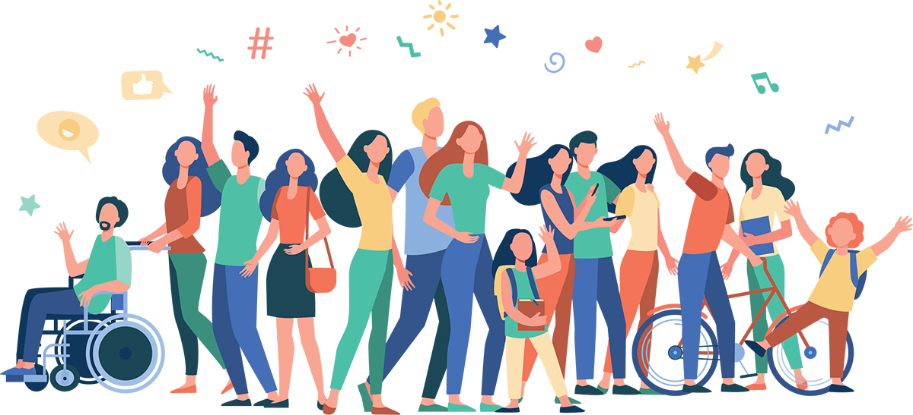

행복한가정문화원의 비전
월간 행복한가정 1천만 가정 보급
본 문화원에서 발행하는 월간 행복한가정은 가정의 소중함을 알리는 크리스천 잡지입니다.
전국 시, 군, 구별 지부 설립
본 문화원에서 발행하는 월간 행복한가정은 가정의 소중함을 알리는 크리스천 잡지입니다.
행복한 세상 만들기
본 문화원에서 발행하는 월간 행복한가정은 가정의 소중함을 알리는 크리스천 잡지입니다.
전국 시, 군, 구 지부모집
사단법인 행복한가정문화원은 행복한 가정을 위한 평생교육의 전국적인 네트워크를
구축하고자 합니다.
상담에 뜻이 있는 지부와 함께 행복한 가정문화를 만들어가고자 하오니 많은 참여 바랍니다.